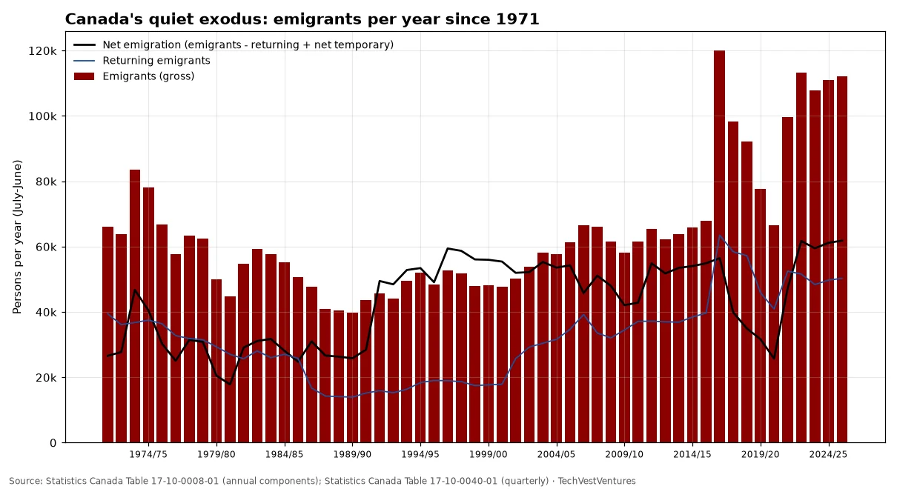
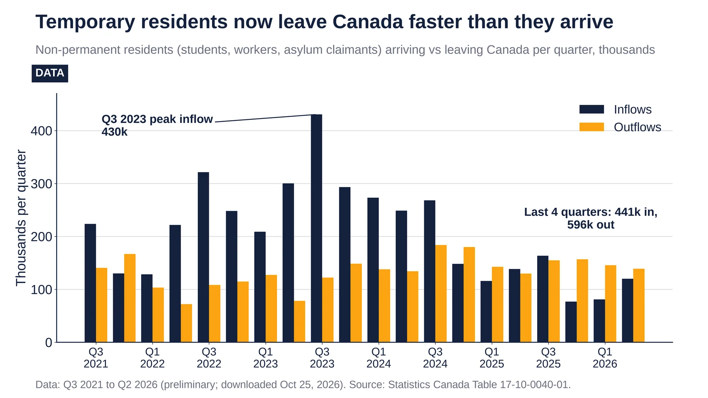

Q1. Canada Exodus

Statistics Canada estimates 112,116 emigrants in 2025/26 (July-June) and 110,914 in 2024/25, near the series high of 119,964 in 2016/17 (a one-year spike) and 70% above the 2014/15 level. Net emigration is about 62,000 a year. Fact-check: a viral X claim (via Grok) that 120,640 people left in 2025, 'the highest since 1952', does not match StatCan's quarterly table, which sums to 111,572 for calendar 2025; StatCan's emigration series in this table only starts in 1971, so the '1952' comparison cannot come from it. Emigration is still small next to immigration (368,224 immigrants in 2025/26, the lowest in five years).
Sources: Statistics Canada Table 17-10-0008-01 (annual components) Statistics Canada Table 17-10-0040-01 (quarterly)

Canada's non-permanent residents over the last four quarters: 441k arrived, 596k left (to Q2 2026). Source: Statistics Canada 17-10-0040.
- Q3 2023: inflows peaked at 430,470.
- Q4 2024: outflows overtook inflows (179,998 vs 148,309), and they have exceeded them in 5 of the 7 quarters since.
- Q4 2025: inflows were 76,983, the lowest in the series, against outflows of 156,781.
- Q3 2025–Q2 2026: a net loss of about 155k temporary residents.
Sources: Statistics Canada Table 17-10-0040